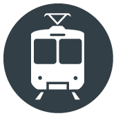

Access to Jobs via Public Transportation

Our Grade: D A typical Baltimorean can only get to 11% of the region’s jobs in under an hour using public transportation.
Definition: This indicator measures the percentage of our region’s jobs that a typical resident can get to in 60 minutes or less using forms of public transportation including buses and trains. It is an indicator of whether our transportation system supports economic growth.
Reason: This is an indicator of whether our transportation system supports economic growth. It tells us whether the region’s public transportation system is helping connect workers with employers. Many low-skill and mid-skill workers do not have a car, which cuts them off from many job opportunities. Businesses need reliable access to a larger labor pool to compete and grow.
Who's Doing It Better?: Salt Lake City. We believe that to earn an A a regional transportation system should provide access to at least 25% of a region’s jobs in 60 minutes or less via public transportation. The Salt Lake City metro region where Utahans, since the 1990’s, have expanded the light rail system and overhauled their network of bus routes earns an A. A typical Salt Lake City resident can get to 25.4% of the region’s jobs in under an hour on transit.